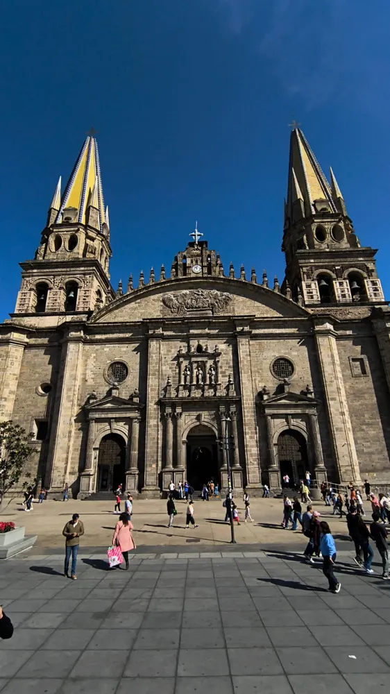
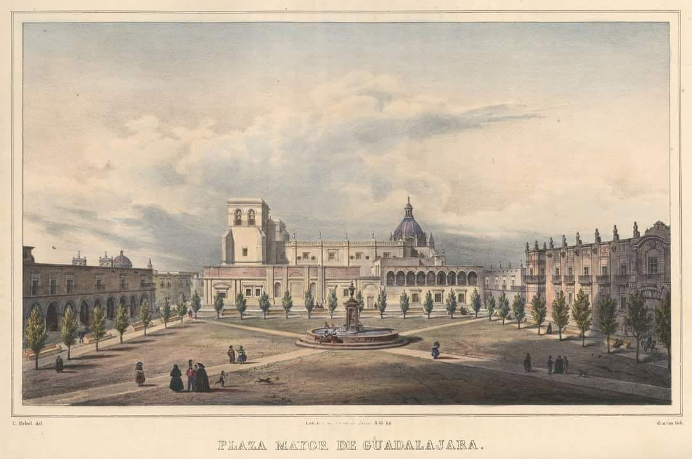
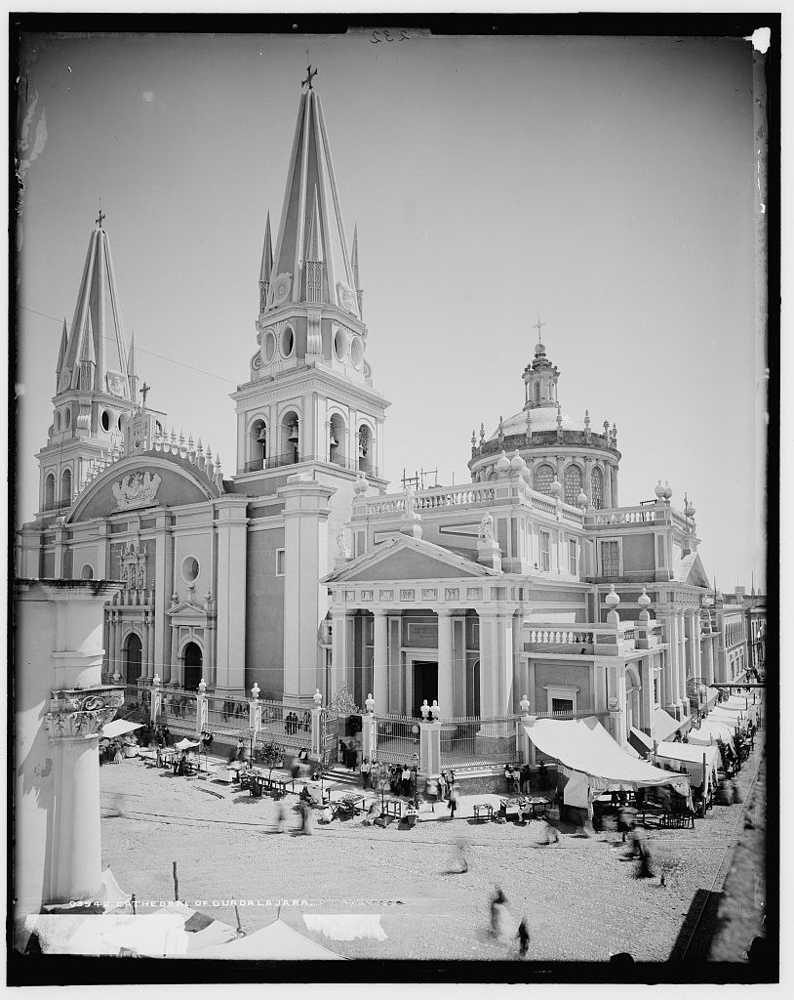

La Catedral de Guadalajara es uno de los monumentos más emblemáticos de la ciudad. Su construcción comenzó en 1561 y se completó en 1618 por el alarife Martín Casillas, aunque ha sufrido varias modificaciones a lo largo de los siglos debido a terremotos y restauraciones.
Antes de concluir la catedral actual, Guadalajara tuvo sedes provisionales. Como aclaración, el primitivo templo de San Miguel (actual Palacio de Justicia) era una parroquia y no una catedral, pues se edificó (1541) antes del traslado de la diócesis desde compostela (1560). La primera catedral formal fue el Xacal Grande de adobe en la actual Rotonda de los hombres ilustres, concluida a mediados de 1565, a la par de la construcción de la Catedral definitiva. El Xacal grande tenía techo de paja, que se quemó el 30 de mayo de 1574, fue cuando la capilla y parroquia votiva de Sn Miguel dentro del enorme claustro de Santa María de Gracia sirvió de breve sede temporal, en lo que se reconstruía el Xacal grande, ahora con un techo de terrado. La manzana de la actual rotonda era propiedad de la diocesis, y ahí estuvo la catedral provisional hasta la conclusión de la actual en 1618.
Hacia 1800, la catedral tenía torres bajas, cuadradas y de estilo neoclásico, construidas de cantera limpia y sin azulejos. El 31 de mayo de 1818, un terremoto colapsó la bóveda principal y las derribó. Aunque en 1843 el arquitecto Manuel Gómez Ibarra concluyó el Sagrario Metropolitano adjunto, un nuevo sismo en 1849 derribó los arranques remanentes de las torres dañadas. Finalmente, en 1854, el propio Ibarra terminó la construcción de las torres neogóticas actuales, caracterizadas por su forma estilizada y su revestimiento de azulejos.

Litografía de 1836 de la plaza mayor (actual plaza de armas) con vista del lado sur de la Catedral.Originalmente, el templo contaba con una decoración interior marcadamente barroca, similar a las Catedrales de Puebla o la CDMX, caracterizada por retablos de madera tallada, ensamblada y cubierta con hoja de oro. Bajo la influencia del academicismo y el neoclásico, estos altares ornamentados fueron desmantelados y destruidos a mediados del siglo XIX. En su lugar, se levantaron altares de mampostería, cantera y mármol, caracterizados por líneas rectas, frentes triangulares y columnas de estilo clásico, eliminando la cargada decoración previa.
Durante la Guerra de Reforma en 1859, un cañoneo contra el centro de la ciudad dañó la Catedral: un proyectil disparado desde el Hospicio Cabañas impactó en la torre norte y perforó la campana "La Purísima", dejando un agujero que aún es visible hoy en día. Decadas después, durante la revolución, en los saqueos de la toma de Guadalajara (1914), se sustrajo de la catedral una copia del cuadro de la Purísima creyendo que era el original de Murillo para trasladarla al Palacio de Gobierno; la obra auténtica permaneció resguardada en el sagrario.

Catedral de Guadalajara todavía con su atrio al frente, 1890.Entre los tesoros artísticos y sagrados que resguarda el templo destaca la Virgen de la Rosa, una de las piezas más antiguas, rescatada de los recintos provisionales antes de la inauguración de 1618. Asimismo, se venera al Señor de las Aguas, un histórico Cristo de gran devoción local ligado a las rogativas por el temporal, y el valioso óleo de La Purísima Concepción, pintado por el maestro barroco español Bartolomé Esteban Murillo. En el ámbito de las reliquias, el recinto conserva el cuerpo de Santa Inocencia, una mártir de los primeros siglos del cristianismo traída desde Roma en el siglo XVIII que se exhibe dentro de una urna de cristal.
Hoy en día componen el conjunto arquitectónico de la Catedral Metropolitana de Guadalajara, además del templo catedral, el palacio arzobispal que se encuentra en la esquina de Morelos y Liceo y la parroquia del Sagrario Metropolitano, templo que se encuentra en la esquina del Paseo Alcalde y Morelos. En el sótano del templo se encuentran criptas de obispos, arzobispos y mártires.